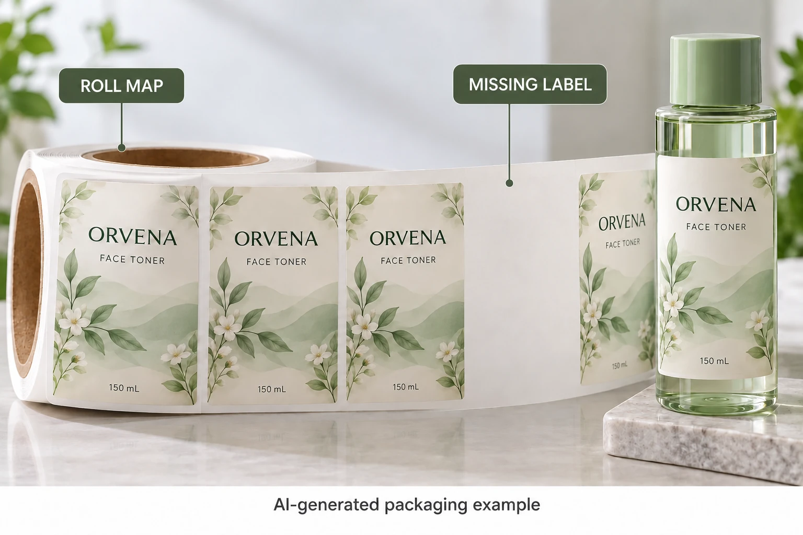

Establish what the web was supposed to contain
Use the acknowledged roll drawing or sample to identify the normal label arrangement and gap. Confirm the artwork version and whether the supply includes one design, an agreed alternating arrangement or another specifically described sequence.
Do not infer missing stock from an unfamiliar leader, trailer or intended nonlabel section. Ask the converter to identify those features in the actual delivery arrangement. Equally, do not describe an unexplained empty position as a normal gap merely because the backing remains continuous.
The roll handoff guide establishes the receiving requirements. Here the narrower decision is how an exception to the expected label sequence is recorded and reconciled.
Locate exceptions on identifiable rolls
Record the job, artwork and physical roll reference. Use an available location reference or the converter's proposed mapping method. Do not invent precise counts or distances from a photograph that cannot establish them.
If a section is examined, identify the scope of that examination. A reviewer who saw one exposed portion has not inspected the entire wound roll. Keep observed positions and unreviewed material distinct, and ask which further examination the supplier needs.
A section intentionally removed during conversion or an authorized investigation should have its own record if it affects the delivered sequence. The buyer need not guess why a label is absent. It needs an acknowledged explanation and a supported handling arrangement.
Keep detection separate from physical continuity
An intact backing can still present an operating question if the expected label sequence changes. Have the actual operator identify how the relevant operation detects and responds to an empty position. Do not assume a sensor notices every exception or tell an operator to override its response.
If a representative trial is required, let the equipment owner define it under site procedures. Record the supplied construction and the kind of exception represented. A clean trial on a normal web does not, by itself, approve a web containing a different sequence.
This guide provides no permitted missing-label rate, standard marker or machine setting. Those requirements must be agreed for the order and receiving line. Where a splice and a missing section coincide, keep the splice's identification and operating protocol with the same roll record.
Reconcile usable stock without double counting
Use one record per design, revision and relevant supplied roll. Clarify whether a reported delivery count already excludes removed or unusable positions before subtracting them again.
| Record | Information to establish | Use |
|---|---|---|
| Expected sequence | Approved artwork arrangement and normal gap | Distinguish normal web from an exception |
| Observed position | Roll ID and supported location reference | Make the exception traceable |
| Examination scope | What was actually reviewed | Avoid an invented whole-roll conclusion |
| Operator response | Acknowledged detection and handling procedure | Establish application readiness |
| Count basis | Reported count and what it includes | Avoid subtracting the same loss twice |
| Usable balance | Accepted stock available for the intended job | Compare with the filling requirement |
| Disposition | Review owner and agreed next action | Close the physical and quantity questions |
First identify the sequence and observed event. Ask the supplier to reconcile the relevant roll record and count basis. Obtain the operator's instruction, then determine the accepted usable balance under the site's process.
The order-quantity guide covers commercial variance and component balances. An operating allowance for an empty web position does not automatically change the purchase order's quantity terms.

Two observations can lead to different next steps
A hypothetical roll has a known, acknowledged exception recorded by the converter and a receiving method that specifically supports it. The remaining question may be whether its count and identification match the agreement. That is different from discovering an unexplained position during a run.
For an unexplained event, preserve the record and obtain a supported investigation before making a broad cause or quantity claim. Separately identified stock may require a different review from the affected roll. Keep the scope explicit rather than extending one observation across the order automatically.
If a corrected supply is arranged, record its identity and which receiving checks still apply. Do not turn an email acknowledging the report into an assumed replacement commitment. The actual order terms and confirmed response govern that next step.
For custom cosmetic labels, send the job, artwork, expected web arrangement, roll references and concise observation. Include count uncertainty and the operator's requirement. The inquiry form prepares a message; photographs and records travel separately by email or WhatsApp. Ask for a traceable sequence and usable balance, not an unsupported estimate of how many labels the roll probably contains.